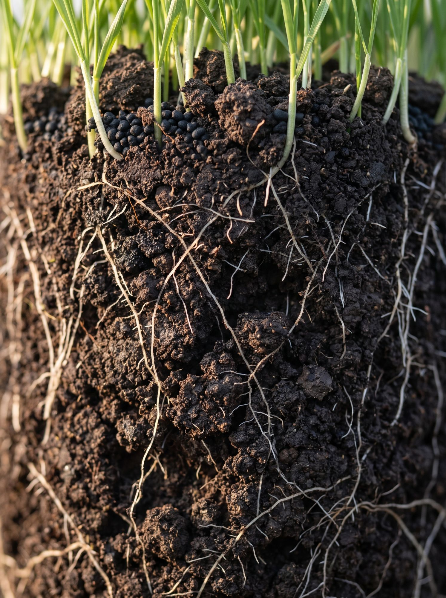
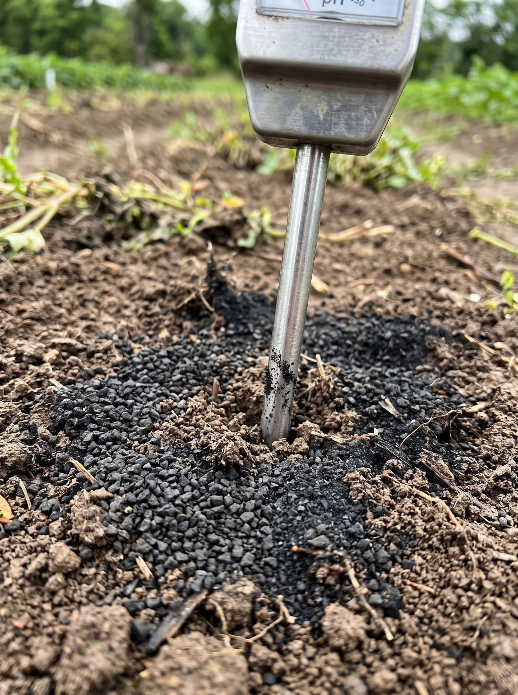
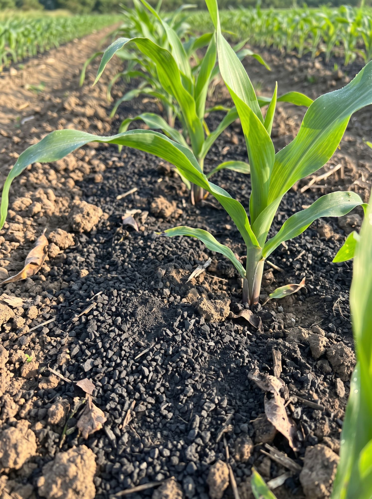
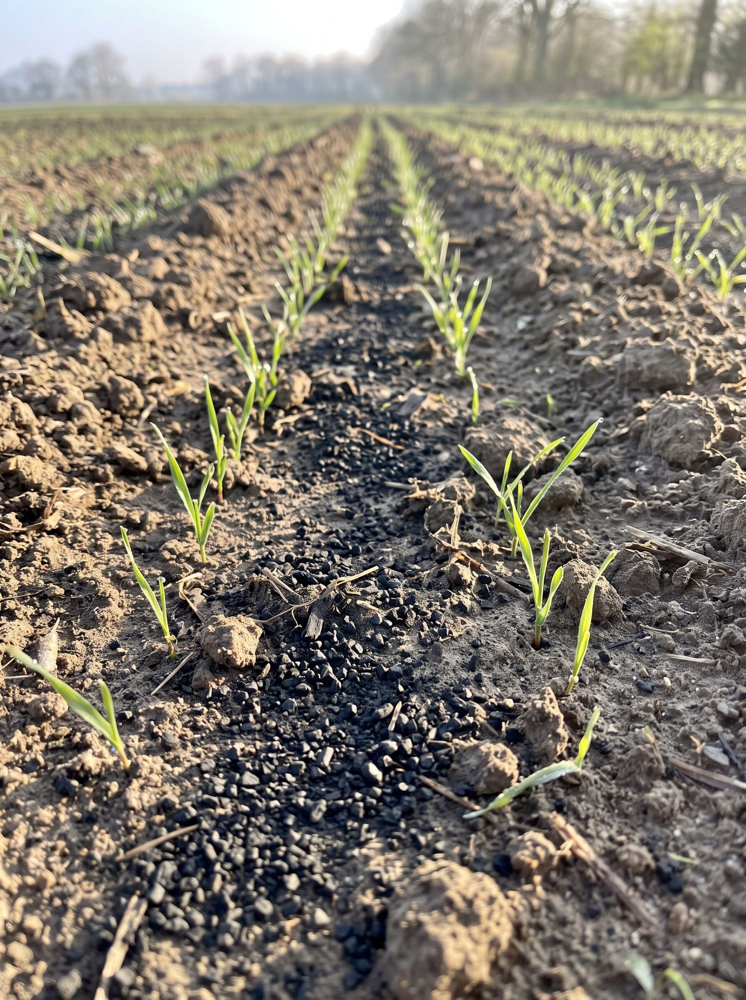
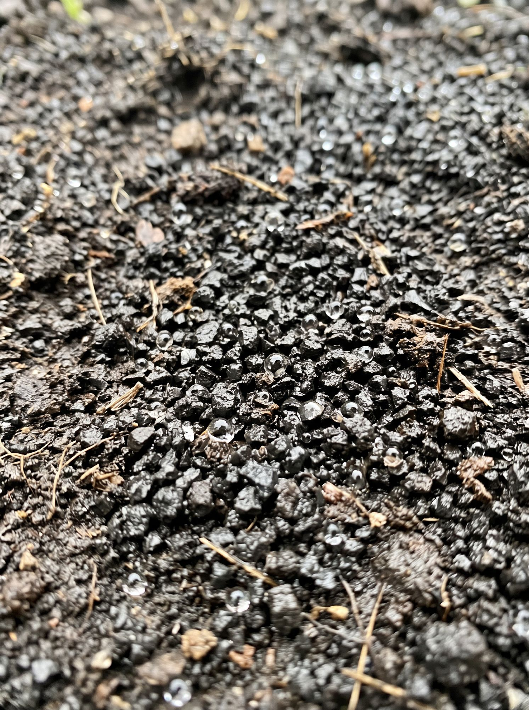
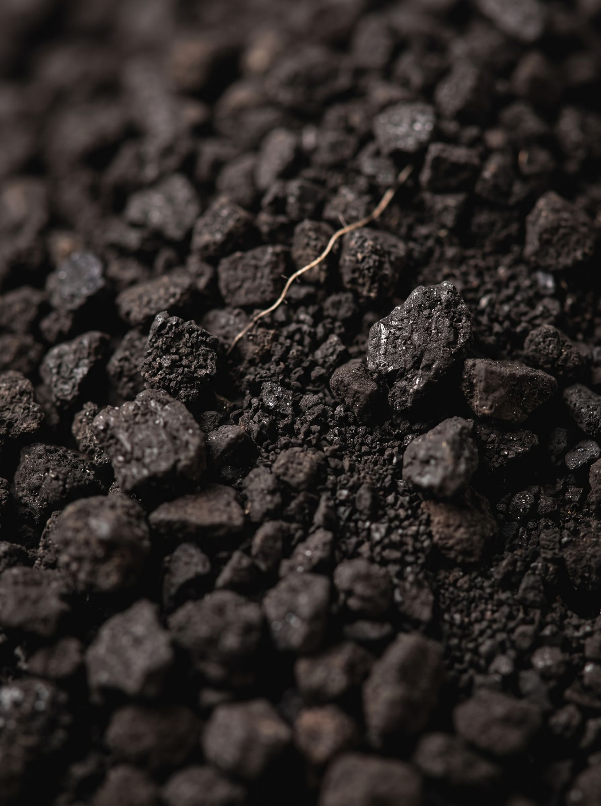
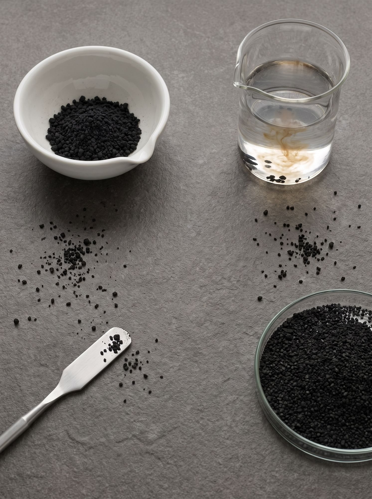
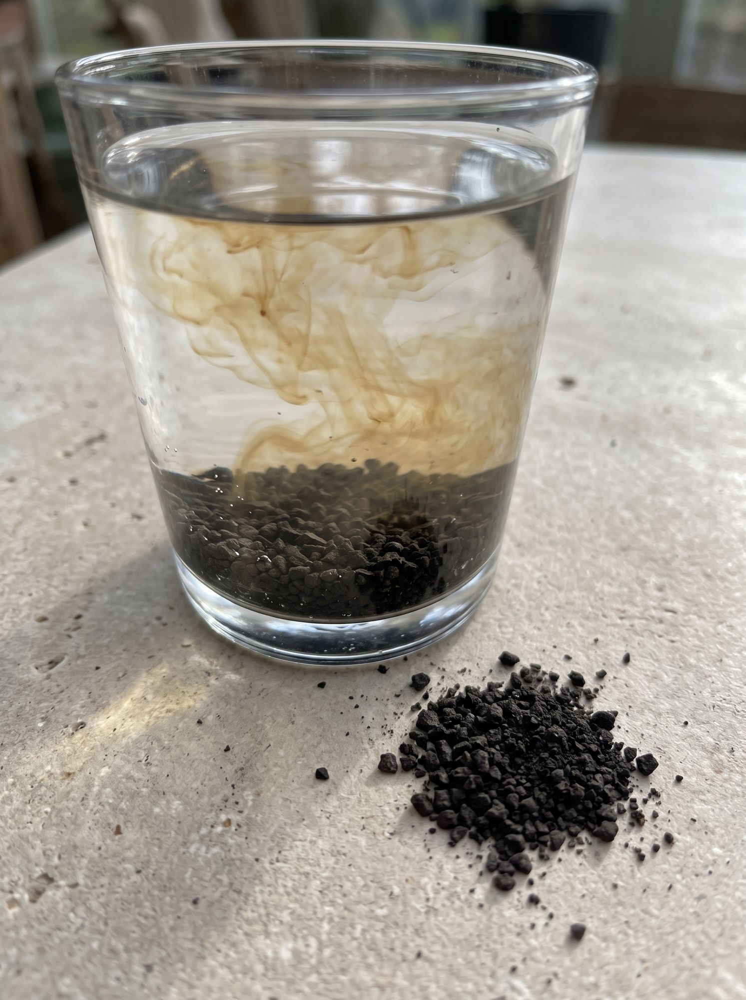
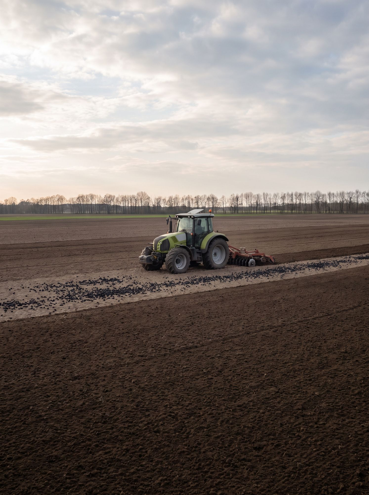
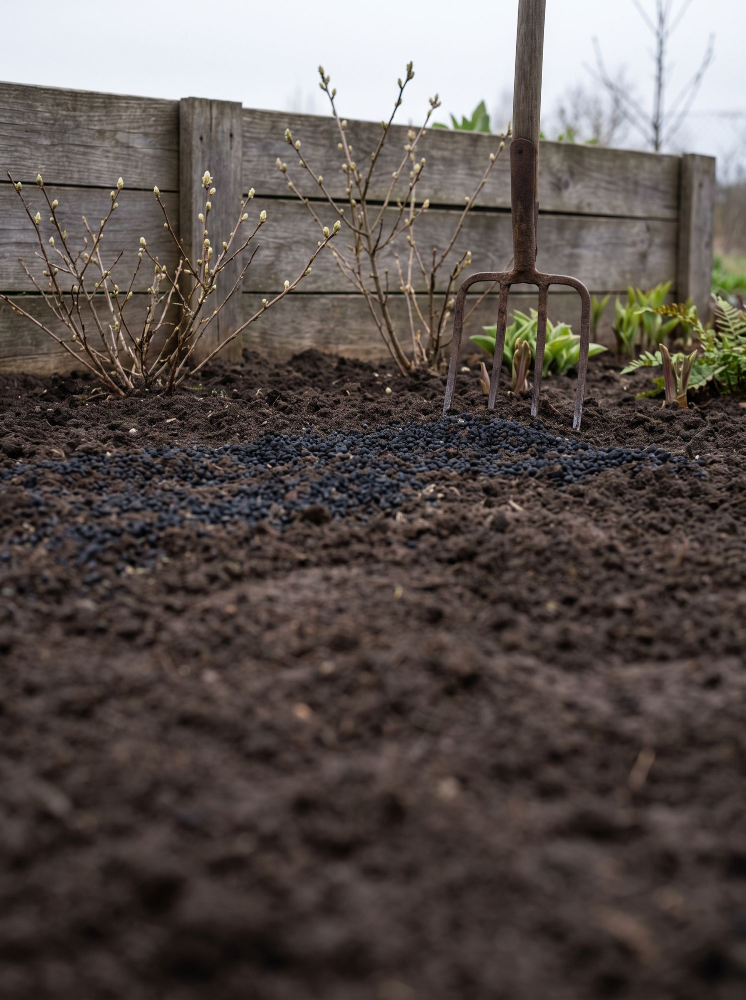

Kondycjoner, nawóz i biostymulator w jednym. Produkt hybrydowy, który łączy zalety granulowanych produktów węglowych z korzyściami płynnych preparatów humusowych.
Wartości w suchej masie – aktualna analiza laboratoryjna (06.2026). Odczyn podajemy w zakresie z dopuszczenia; w analizie pH 9,84.
Liczb z tej tabeli nie porównuj wprost z Carbomat Eco. Carbomat Humic to wyekstrahowany i aktywowany koncentrat substancji humusowych o suchej masie ~56%, a Carbomat Eco to surowy lignit – inna postać produktu i inna baza odniesienia. O efekcie w polu decyduje dostępność składników dla roślin, nie sama zawartość w tabeli.
Który dla mnie
Ten sam produkt na polu i w ogrodzie.
Carbomat Humic to dziś przede wszystkim produkt dla rolnictwa polowego, ale na pewno świetnie sprawdzi się też w Twoim domu lub ogrodzie. Wybierz, gdzie chcesz zastosować, a dopasujemy do Ciebie sposób aplikacji, dawki i formę zakupu.
Carbomat Humic powstaje z naturalnego lignitu, ale w przeciwieństwie do surowego węgla brunatnego przechodzi zaawansowaną ekstrakcję i aktywację substancji humusowych. Jego najcenniejsze składniki są więc znacznie łatwiej dostępne i szybciej zaczynają działać. To połączenie szybkiego działania z długofalowym wpływem na kondycję gleby.
1 · Pochodzenie
Ten sam rodzaj surowca co w Carbomat Eco – lignit – ale po ekstrakcji i aktywacji substancji humusowych, stąd szybsze działanie.
Carbomat Humic wspiera tworzenie stabilnej, gruzełkowatej struktury gleby i procesy odbudowy próchnicy. Poprawia napowietrzenie, ułatwia rozwój korzeni i zwiększa żyzność stanowiska. Regularne stosowanie pozwala stopniowo odbudować potencjał gleby, dlatego korzyści widać także w kolejnych latach.

2 · Kondycjoner gleby
Stabilna, gruzełkowata struktura gleby: napowietrzenie, rozwój korzeni, odbudowa próchnicy.
Naturalnie wysokie pH produktu wspomaga ograniczanie zakwaszenia gleby oraz zwiększa jej zdolności buforowe. W efekcie poprawiają się warunki do pobierania składników pokarmowych, a gleba dłużej utrzymuje optymalny odczyn. To szczególnie istotne na stanowiskach o niskim pH.

3 · Stabilizacja pH
pH 9–11odczyn produktu (w analizie 9,84)
Wysokie pH produktu ogranicza zakwaszenie i zwiększa zdolności buforowe gleby.
Zawiera około 6% K₂O (tj. około 60 kg w tonie), dostarczając roślinom łatwo przyswajalny potas już od początku wegetacji. Pozwala zasadniczo zredukować stosowane nawożenie potasowe.

4 · Potas
~6% K₂Ookoło 60 kg potasu w tonie produktu
Na produkcie
~6% K₂O
W suchej masie
~11,3%
Zawartość potasu wg materiału producenta (ok. 6% K₂O, ok. 60 kg/t).
Bogactwo kwasów humusowych oraz aktywowanego węgla organicznego pobudza rozwój mikroorganizmów glebowych, wspiera wzrost korzeni i poprawia wykorzystanie składników pokarmowych. Dzięki temu rośliny lepiej radzą sobie z suszą, okresowym zalaniem czy innymi czynnikami stresowymi.

5 · Biostymulator i nawóz
Pobudza mikroorganizmy glebowe, wspiera wzrost korzeni i odporność na suszę czy zalanie.
Aktywowany węgiel organiczny pomaga glebie magazynować wodę i zatrzymywać składniki pokarmowe w strefie korzeniowej. Dzięki temu są one dłużej dostępne dla roślin, co poprawia wykorzystanie nawożenia i odporność upraw na okresowe niedobory wody. Dodatek węgla aktywowanego to także skuteczniejsza sekwestracja CO₂.

6 · Retencja
Magazynuje wodę i składniki w strefie korzeniowej; węgiel w glebie to także sekwestracja CO₂.
Carbomat Humic to wieloskładnikowy kompleks materii organicznej z biomasy roślinnej sprzed milionów lat. Zawiera:
naturalną, stabilną próchnicę – kwasy huminowe, fulwowe i huminy,
stabilny węgiel organiczny,
liczne związki organiczne i naturalne chelaty mineralne.

7 · Kompleks organiczny
Materia organiczna
~50%
Ekstrakt humusowy
~48%
Kwasy huminowe
~45%
Węgiel organiczny
~28%
Kwasy fulwowe
~2,5%
Wartości w suchej masie – aktualna analiza laboratoryjna (06.2026).
Dzięki wysokiej czystości Carbomat Humic może być bezpiecznie stosowany w gospodarstwach dbających o długoterminową żyzność gleby:
brak wykrytych bakterii Salmonella w badanej próbce,
bardzo niska liczba mikroorganizmów wskaźnikowych,
niska zawartość metali ciężkich – pełne wyniki w tabeli czystości.

8 · Czystość
Parametr
Wynik
Salmonella spp.
nie wykryto
Escherichia coli
<10 cfu/g
Enterobacteriaceae
<10 cfu/g
Arsen (As)
1,52 mg/kg
Kadm (Cd)
<0,303 mg/kg
Rtęć (Hg)
<0,121 mg/kg
Ołów (Pb)
3,44 mg/kg
Nikiel (Ni)
2,86 mg/kg
Aktualna analiza laboratoryjna (06.2026), wartości na próbce produktu.
Carbomat Humic rozpuszcza się tylko częściowo – to celowa cecha produktu, a nie jego wada:
do roztworu przechodzą aktywne substancje humusowe,
w glebie zostają nierozpuszczalne huminy – trwały węgiel organiczny, który poprawia jej strukturę i wspiera odbudowę próchnicy.

9 · Rozpuszczalność
Do roztworu przechodzą aktywne substancje humusowe; nierozpuszczalne huminy pozostają w glebie jako trwały węgiel organiczny.
Pochodzenie produktu
Carbomat Humic powstaje z naturalnego lignitu, jednak w przeciwieństwie do surowego węgla brunatnego jest produktem poddanym zaawansowanemu procesowi ekstrakcji i aktywacji substancji humusowych. Dzięki temu najcenniejsze składniki odpowiedzialne za poprawę jakości gleby oraz rozwój roślin są znacznie łatwiej dostępne i szybciej zaczynają działać. Efektem jest produkt, który nie tylko wspiera rośliny od pierwszych etapów wzrostu, ale również stopniowo poprawia strukturę, żyzność i aktywność biologiczną gleby. To połączenie szybkiego działania z długofalowym wpływem na kondycję gleby.
Bogaty kompleks związków organicznych
Carbomat Humic to wieloskładnikowy kompleks materii organicznej z biomasy roślinnej sprzed milionów lat. Oprócz substancji humusowych dostarcza glebie stabilny węgiel organiczny, naturalne minerały i związki bioaktywne, które odbudowują jej potencjał biologiczny i fizyczny. Zawiera:
naturalną, stabilną próchnicę – kwasy huminowe, fulwowe i huminy – jaka w glebie powstaje przez dziesięciolecia;
stabilny węgiel organiczny, który długotrwale poprawia właściwości fizyczne i biologiczne stanowiska;
liczne związki organiczne: ligniny, woski, żywice, polifenole, taniny, antyoksydanty, kwasy lipidowe, wolne aminokwasy, fitohormony, związki aromatyczne;
kilkadziesiąt naturalnych chelatów mineralnych z makro-, mikroelementami i pierwiastkami śladowymi.
Czysty i bezpieczny dla gleby
Carbomat Humic powstaje z naturalnej materii organicznej, poddawanej rygorystycznej kontroli jakości. Produkt charakteryzuje się wysoką czystością mikrobiologiczną oraz bardzo niską zawartością niepożądanych pierwiastków, dzięki czemu może być bezpiecznie stosowany w gospodarstwach dbających o długoterminową żyzność gleby.
Brak wykrytych patogenów Salmonella spp. – nie wykryto obecności bakterii Salmonella w badanej próbce.
Bardzo niska liczba mikroorganizmów wskaźnikowych.
Niska zawartość metali ciężkich – pełne wyniki w tabeli czystości.
Częściowa rozpuszczalność
Carbomat Humic jest częściowo rozpuszczalny, ale nie rozpuszcza się całkowicie. To celowa cecha produktu, a nie jego wada.
Do roztworu przechodzą aktywne substancje humusowe.
Pozostają nierozpuszczalne huminy – najbardziej stabilna frakcja materii organicznej. To one stanowią trwały węgiel organiczny, który pozostaje w glebie przez długi czas, poprawiając jej strukturę, pojemność sorpcyjną oraz wspierając odbudowę próchnicy.
Kiedy stosować
Jeden zabieg w roku, wiosną lub jesienią.
Przy stosowaniu corocznym efekt się kumuluje. Nie stosujemy na rośliny mokre.

Pole

Ogród i dom
Jeden zabieg w roku. Przed siewem / sadzeniem – rozrzut i wymieszanie z wierzchnią warstwą gleby. Pogłównie – najlepiej wiosną, w czasie intensywnego rozwoju roślin; w trakcie opadów produkt wnika wraz z wodą do strefy korzeniowej.
1 raz na sezon w przypadku roślin już rosnących, najlepiej przed ruszeniem wegetacji, albo w trakcie siewu / sadzenia lub zaraz po.
Planujesz wapnowanie? Oba zabiegi da się wykonać jednym przejazdem – kolejność i uzasadnienie opisaliśmy w FAQ.
To produkt organiczny – nie ma możliwości przenawożenia, świetnie współpracuje z nawożeniem organicznym i mineralnym.
Największe różnice między Carbomat Eco a Carbomat Humic.
Dwa produkty sypkie z tego samego rodzaju surowca – lignitu – i dwa różne tempa działania. Cztery najważniejsze różnice, a do tego lista sytuacji, w których wybierasz Humic.
01
Carbomat Eco
Działa powoli
Carbomat Humic
Działa już od pierwszych dni po zastosowaniu
02
Carbomat Eco
Większość substancji jest trudno dostępna dla roślin
Carbomat Humic
Zawiera aktywowane substancje humusowe łatwo dostępne dla roślin
03
Carbomat Eco
Poprawia właściwości gleby głównie w długim okresie
Carbomat Humic
Łączy szybkie wsparcie roślin z długotrwałą poprawą gleby
Carbomat Humic jest częściowo rozpuszczalny, ale nie rozpuszcza się całkowicie. To celowa cecha produktu, a nie jego wada. Został opracowany jako produkt do aplikacji doglebowej – właśnie wtedy w pełni wykorzystuje swoje właściwości i zapewnia najlepsze efekty.
Podczas rozpuszczania do roztworu przechodzą aktywne substancje humusowe, natomiast pozostają nierozpuszczalne huminy – najbardziej stabilna frakcja materii organicznej. To właśnie one stanowią trwały węgiel organiczny, który pozostaje w glebie przez długi czas, poprawiając jej strukturę, pojemność sorpcyjną oraz wspierając odbudowę próchnicy.
Dlatego nie zalecamy rozpuszczania Carbomat Humic i stosowania go przez opryskiwacze, instalacje fertygacyjne czy inne układy przeznaczone do preparatów całkowicie rozpuszczalnych. Nierozpuszczalne cząstki huminów mogą powodować zatykanie filtrów i dysz.
To dwa różne tempa działania. Carbomat Eco jest materiałem o niewielkim stopniu przetworzenia: działa powoli, większość substancji jest trudno dostępna dla roślin, a właściwości gleby poprawia głównie w długim okresie.
Carbomat Humic jest produktem poddanym ekstrakcji i aktywacji: zawiera aktywowane substancje humusowe łatwo dostępne dla roślin, więc działa już od pierwszych dni po zastosowaniu i łączy szybkie wsparcie roślin z długotrwałą poprawą gleby.
Wszystkie cztery różnice zebraliśmy w sekcji Eco czy Humic. Pod rośliny kwasolubne wybieraj Carbomat Eco – Humic ma pH 9–11.
Odpowiedź w przygotowaniu.
Potrzebujesz jej teraz? Zadaj to pytanie wirtualnemu doradcy na dole ekranu.
Z agrotechnicznego punktu widzenia najlepsze efekty uzyskuje się, stosując Carbomat Humic bezpośrednio po wapnowaniu. Wapnowanie poprawia odczyn gleby, natomiast Carbomat Humic pomaga go stabilizować dzięki wysokiej zawartości substancji humusowych i zwiększeniu pojemności buforowej gleby. Dodatkowo dostarcza aktywnych substancji humusowych oraz stabilnego węgla organicznego, co przyspiesza odbudowę żyzności i aktywności biologicznej gleby.
Z praktycznego punktu widzenia równie ważna jest jednak ekonomika zabiegów. Dlatego w wielu gospodarstwach najlepszym rozwiązaniem jest wykonanie jednego przejazdu i zastosowanie obu produktów podczas tego samego zabiegu, szczególnie w przypadku wapna węglanowego, które nie wykazuje tak wysokiej reaktywności jak wapno tlenkowe.
W większości standardowych zastosowań rolniczych Carbomat Humic zapewnia efekty, dla których najczęściej stosuje się biowęgiel, jednocześnie dostarczając aktywnych substancji humusowych i składników pokarmowych. Dzięki temu w typowej agrotechnice nie ma potrzeby dodatkowego stosowania biowęgla. Wyjątek mogą stanowić specjalistyczne zastosowania, takie jak rekultywacja gleb silnie zdegradowanych czy projekty ukierunkowane na maksymalną sekwestrację węgla, z uwagi na jeszcze lepsze właściwości sorpcyjne biowęgli.
To dwa różne produkty o myląco podobnych nazwach. Carbomat Humic to produkt sypki (węgiel aktywowany) do aplikacji doglebowej, a Carbohumic to rodzina produktów płynnych: Carbohumic doglebowy i Carbohumic dolistny. Jeśli szukasz płynu do podlewania lub oprysku – to Carbohumic.
Przed siewem / sadzeniem po całej powierzchni – co najmniej 250 kg/ha, wymieszane z wierzchnią warstwą gleby do 10 cm. Pasowo – co najmniej 150 kg/ha. Współrzędnie w strip-till – 100–120 kg/ha. Pogłównie – do 250 kg/ha po powierzchni albo do 150 kg/ha pasowo wzdłuż rzędów. Zalecany jeden zabieg w roku.
Produkt można mieszać z wapnem nawozowym i innymi nawozami granulowanymi, stosowanymi przez rozrzutnik, a sposoby aplikacji dowolnie łączyć – np. stosowanie pasowe wraz ze współrzędnym w technologii strip-till. Nie stosujemy na rośliny mokre. Pełne dawki dla pola i ogrodu: Który dla mnie.
Nie. Carbomat Humic ma pH 9–11 i podnosi odczyn gleby, a borówka i inne wrzosowate, różaneczniki, azalie czy niektóre hortensje potrzebują gleby kwaśnej. Dla nich sięgnij po Carbomat Eco o niższym pH.
Termin przydatności to +5 lat. Przechowuj produkt w oryginalnym, zamkniętym opakowaniu, w miejscu suchym.
Chcesz jednym zabiegiem uzupełnić niedobory organiki i potasu?